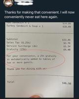

0

0

Apple has reportedly asked Google to look into "seting up servers" for a Gemini-powered upgrade to Siri that meets Apple's privacy standards. The Verge reports: Apple had already announced in January that Google's Gemini AI models would help power the upgraded version of Siri it delayed last year, but The Information's report indicates Apple might lean even more on Google so it can catch up in AI.
The original partnership announcement said that "the next generation of Apple Foundation Models will be based on Google's Gemini models and cloud technology," and that the models would "help power future Apple Intelligence features," including "a more personalized Siri." While the announcement noted that Apple Intelligence would "continue to run on Apple devices and Private Cloud Compute," it didn't specify if the new Siri would run on Google's cloud. Apple's Private Cloud Compute is not only underpowered but it's also underutilized in its current state, notes 9to5Mac, "with the company only using about 10% of its capacity on average, leading to some already-manufactured Apple servers to be sitting dormant on warehouse shelves."
Read more of this story at Slashdot.
Apple today announced the iPhone 17e with support for MagSafe and an upgraded A19 chip. The base model also gets a bump to 256GB of storage at $599, and Apple is equipping the device with its new scratch-resistant Ceramic Shield 2 glass that's supposedly 3x more durable than the 16e. Macworld reports: MagSafe would normally mean significantly faster wireless charging speeds too: the 16e is capped at 7.5W, whereas recent iPhones can wirelessly charge using MagSafe at up to 22W or even 25W. Unfortunately the iPhone 17e has not been given access to the full extent of MagSafe's powers in this regard, and has a limit of 15W. That's the same as MagSafe on the iPhones 12 through 15, and remains an improvement on the 16e, but is still disappointing. [...]
It was also expected that the 17e would get a new processor, as this is a standard upgrade for almost every refresh of almost every Apple product. The iPhone 16e came with an A18 chip; the 17 has an A19, which, according to Apple, "delivers exceptional performance for everything users do." Of course that depends on the user and their needs, and it's important to point out that, just like last year, Apple has chosen to use "binned" units of the chip in order to save money. Binned chips have failed manufacturing tests in some minor way and don't have the full complement of cores. [...]
And although the cameras are still disappointingly few in number -- one on the front and one on the back -- the wording for the portrait mode has been updated from "Portrait mode with Depth Control" (the same as on the iPhone 12) to "Next-generation portraits with Focus and Depth Control" (same as on the iPhone 17). This appears to highlight the fact that you can change the focus point. The 17e is available in white, black, and soft pink starting at $599.
Read more of this story at Slashdot.
An anonymous reader quotes a report from TechCrunch: One day not long ago, a founder texted his investor with an update: he was replacing his entire customer service team with Claude Code, an AI tool that can write and deploy software on its own. To Lex Zhao, an investor at One Way Ventures, the message indicated something bigger -- the moment when companies like Salesforce stopped being the automatic default. "The barriers to entry for creating software are so low now thanks to coding agents, that the build versus buy decision is shifting toward build in so many cases," Zhao told TechCrunch.
The build versus buy shift is only part of the problem. The whole idea of using AI agents instead of people to perform work throws into question the SaaS business model itself. SaaS companies currently price their software per seat -- meaning by how many employees log in to use it. "SaaS has long been regarded as one of the most attractive business models due to its highly predictable recurring revenue, immense scalability, and 70-90% gross margins," Abdul Abdirahman, an investor at the venture firm F-Prime, told TechCrunch. When one, or a handful, of AI agents can do that work -- when employees simply ask their AI of choice to pull the data from the system -- that per-seat model starts to break down.
The rapid pace of AI development also means that new tools, like Claude Code or OpenAI's Codex, can replicate not just the core functions of SaaS products but also the add-on tools a SaaS vendor would sell to grow revenue from existing customers. On top of that, customers now have the ultimate contract negotiation tool in their pockets: If they don't like a SaaS vendor's prices, they can, more easily than ever before, build their own alternative. "Even if they do not take the build route, this creates downward pressure on contracts that SaaS vendors can secure during renewals," Abdirahman continued.
We saw this as early as late 2024, when Klarna announced that it had ditched Salesforce's flagship CRM product in favor of its own homegrown AI system. The realization that a growing number of other companies can do the same is spooking public markets, where the stock prices of SaaS giants like Salesforce and Workday have been sliding. In early February, an investor sell-off wiped nearly $1 trillion in market value from software and services stocks, followed by another billion later in the month. Experts are calling it the SaaSpocalypse, with one analyst dubbing it FOBO investing -- or fear of becoming obsolete. Yet the venture investors TechCrunch spoke with believe such fears are only temporary. "This isn't the death of SaaS," Aaron Holiday, a managing partner at 645 Ventures, told TechCrunch. Rather, it's the beginning of an old snake shedding its skin, he said.
Read more of this story at Slashdot.
"At its peak in early 2014, Stack Overflow received more than 200,000 questions per month," notes the site DevClass.com. But in December they'd just 3,862 questions were asked — a 78 percent drop from the previous year.
But Stack Overflow's blog announced a beta of "a redesigned Stack Overflow" this week, noting that at July's WeAreDevelopers conference they'd "committed to pushing ourselves to experiment and evolve..."
Over the past year, on the public platform, we introduced new features, including AI Assist, support for open-ended questions, enhancements to Chat, launched Coding Challenges, created an MCP server [granted limited access to AI agents and tools], expanded access to voting and comments, and more.
However, these launches are not standalone features. We have also been rethinking our look and feel, how people engage with Stack Overflow, and how content is created and shared. These new features, along with the redesign, represent how we are bringing Stack Overflow's new vision to life and delivering value that developers cannot find elsewhere.
Our goal is to build the space for every technical conversation, centered on real human-to-human connection and powered by AI when it helps most. To support this, we are introducing a redesigned Stack Overflow to best reflect this direction... During the beta period, users can visit the beta site at beta.stackoverflow.com and share feedback as we build towards a new experience on Stack Overflow.
They've updated their library of reusable UI components (buttons, forms, etc.), and are promising "More ways to share knowledge and ask any technical question." ("Alongside looking for the single right answer to your question, you can now find and share experience-based insights and peer recommendations...")
They're launching all the planned features and functionality in April, when "More users will automatically redirect to the new site." (Starting in April users "can continue to toggle back to the classic site for a limited time.")
Read more of this story at Slashdot.
The Norwegian Consumer Council, a government funded organization advocating for consumer's rights, released a report on the trend of "enshittification" in digital consumer goods and services, suggesting ways consumers for consumers to resist. But they've also dramatized the problem with a funny four-minute video about the man whose calls for him to make things shitty for people.
"It's not just your imagination. Digital services are getting worse," the video concludes — before adding that "Luckily, it doesn't have to be this way." The Consumer Council's announcement recommends:
Stronger rights for consumers to control, adapt, repair, and alter their products and services,
Interoperability, data portability, and decentralisation as the norm, so the threshold for moving to different services becomes as low as possible,
Deterrent and vigorous enforcement of competition law, so that Big Tech companies are not allowed to indiscriminately acquire start-ups, competitors or otherwise steer the market to their advantage,
Better financing of initiatives to build, maintain or improve alternative digital services and infrastructure based on open source code and open protocols,
Reduce public sector dependence on big tech, to regain control and to contribute to a functioning market for service providers that respect fundamental rights,
Deterrent and consistent enforcement of other laws, including consumer and data protection law.
The Norwegian Consumer Council is also joining 58 organisations and experts in a letter asking the Norwegian government to rebalance power with enforcement resources and by prioritizing the procurement of services based on open source code. And "Our sister organisations are sending similar letters to their own governments in 12 countries."
They're also sending a second letter to the European Commission with 29 civil society organisations (including the EFF and Amnesty International) warning about the risks of deregulation and calling for reducing dependency on big tech.
Thanks to Slashdot reader DeanonymizedCoward for sharing the news.
Read more of this story at Slashdot.
Paramount Skydance plans to combine HBO Max and Paramount+ into a single streaming platform following its acquisition of Warner Bros. Discovery. "As we said, we do plan to put the two services together, which today gives us a little over 200 million direct-to-consumer subscribers," said David Ellison, the company's CEO. "We think that really positions us to compete with the leaders in the space." The deal still needs regulatory approval. The Washington Post reports: He added that Paramount didn't want to make changes to the HBO brand. "Our viewpoint is HBO should stay HBO," Ellison said, noting that his favorite HBO product is "Game of Thrones." If Justice Department regulators allow the deal to go through, it would place recent HBO Max hits, such as "The Pitt" and "A Knight of the Seven Kingdoms," alongside Paramount offerings including "South Park" and "Yellowstone." "They built a phenomenal brand," he said. "They are a leader in the space, and we just want them to continue doing more of it."
The deal to buy Warner Bros., valued at about $110 billion, will almost surely attract regulatory scrutiny from the Justice Department because -- without divestments -- it places major swaths of the film, television and news industries under one roof: Warner Bros. and Paramount studios, HBO Max and Paramount+, and CBS and CNN would all have the same parent company. Ellison expressed confidence on the call that the deal wouldn't face hurdles with regulators.
Read more of this story at Slashdot.
An anonymous reader quotes a report from Ars Technica: Charter Communications, operator of the Spectrum cable brand, has obtained Federal Communications Commission permission to buy Cox and surpass Comcast as the country's largest home Internet service provider. Charter has 29.7 million residential and business Internet customers compared to Comcast's 31.26 million. Buying Cox will give Charter another 5.9 million Internet customers. The FCC approved the deal on Friday, but the companies still need Justice Department approval and sign-offs from states including California and New York.
Opponents of Charter's $34.5 billion acquisition told the FCC that eliminating Cox as an independent entity will make it easier for Charter and Comcast to raise prices. But the FCC dismissed those concerns on the grounds that Charter and Cox don't compete directly against each other in the vast majority of their territories.
FCC Chairman Brendan Carr's primary demand from companies seeking to merge has been to eliminate diversity, equity, and inclusion (DEI) programs and policies. In a press release (PDF), the Carr-led FCC said that "Charter has committed to new safeguards to protect against DEI discrimination," and that Charter's network-expansion plans will bring "faster broadband and lower prices" to rural areas. The merger was approved one day after Charter sent a letter to Carr outlining its actions to end DEI. Charter offers broadband and cable service in 41 states, while Cox does so in 18 states.
Read more of this story at Slashdot.
Over the weekend, Windows Latest noticed that Microsoft's official Copilot Discord server began automatically blocking the term "Microslop." As shown in a screenshot, any message containing the word is automatically prevented from posting, and users receive a moderation notice explaining that the message includes language deemed inappropriate under the server's rules. From the report: Windows Latest found that sending a message with the word "Microslop" inside the official Copilot Discord server immediately triggers an automated moderation response. The message does not appear publicly in the channel, and instead, only the sender sees the notice stating that the content is blocked by the server because it contains a phrase deemed inappropriate.
Of course, the internet rarely leaves things there. Shortly after Windows Latest posted about Copilot Discord server blocking Microslop on X, users began experimenting in the server with variations such as "Microsl0p" using a zero instead of the letter "o." Predictably, those versions slipped past the filter. Keyword moderation has always been something of a cat-and-mouse game, and this isn't any different.
What started as a simple keyword filter quickly snowballed into users deliberately testing the restriction and posting variations of the blocked term. Accounts that included "Microslop" in their messages first got banned from messaging again. Not long after, access to parts of the server was restricted, with message history hidden and posting permissions disabled for many users.
Read more of this story at Slashdot.
An anonymous reader quotes a report from the Washington Post: The Plain Dealer, Cleveland's largest newspaper, has begun to feature a new byline. On recent articles about an ice carving festival, a medical research discovery and a roaming pack of chicken-slaying dogs, a reporter's name is paired with the words "Advance Local Express Desk." It means: This article was drafted by artificial intelligence. "This article was produced with assistance from AI tools and reviewed by Cleveland.com staff," reads a note at the bottom of each robot-penned piece, differentiating it from those still written primarily by journalists. The disclosure has done little to stem the backlash that caromed across the news industry after the paper's editor, Chris Quinn, published a Feb. 14 column lamenting that a fresh-out-of-college job applicant withdrew from a reporting fellowship when they found out the position included no writing -- just filing notes to an AI writing tool.
"Artificial intelligence is not bad for newsrooms. It's the future of them," Quinn wrote, adding that "by removing writing from reporters' workloads, we've effectively freed up an extra workday for them each week." [...] Quinn, for his part, says his paper's use of AI to find, draft and edit stories is a success story that others must emulate if they want to survive. "It's a tool," he said in a phone interview last week. "If AI can do part of our job, then why not let it -- and have people do the part it can't do?" He added that the paper's embrace of technology -- including using AI to write stories summarizing its reporters' podcasts and its readers' letters to the editor -- is already boosting its bottom line, helping it retain staff at a time when other newspapers are shrinking or even shutting down. Just 130 miles east of Cleveland, the 240-year-old Pittsburgh Post-Gazette said in January that it will close its doors this spring.
Quinn, who has led the Plain Dealer's newsroom since 2013, said its newsroom has shrunk from some 400 employees in the late 1990s to just 71 today. Over the past three years, Quinn has implemented a suite of AI tools with various purposes: transcribing local government meetings, scraping municipal websites for story leads, cleaning up typos in story drafts, suggesting headlines and helping reporters draft follow-ups to articles they've already written. He said he is particularly pleased with an AI tool that turns podcasts by the paper's reporters into stories for the website, which he said generated more than 10 million page views last year. He has documented those efforts in letters to readers and sought their feedback. But the paper's latest experiment -- using AI to turn reporters' notes into full story drafts -- has aroused indignation online and anxiety within the paper's ranks.
Read more of this story at Slashdot.
South Korean tax authorities lost millions in seized cryptocurrency after publishing high-res photos of Ledger hardware wallets that clearly displayed the wallets' seed phrases, allowing an unknown party to drain the funds. Gizmodo reports: South Korea's National Tax Service seized crypto assets during recent enforcement actions against 124 high-value tax evaders, but now, a large chunk of that crypto cash has been lost. The operation originally resulted in the confiscation of crypto holdings worth about 8.1 billion won, or roughly $5.6 million. However, officials later issued a press release to showcase these efforts in recovering delinquent taxes, and the release included photographs of Ledger hardware wallets taken into custody along with handwritten notes that displayed the wallet seed phrases.
Those images attached to the press release turned out to be the critical error. High-resolution photos clearly showed the mnemonic recovery phrases, which serve as the master key for accessing the wallets. This exposure eliminated any protection provided by the offline cold storage on the Ledger devices. Possession of the seed phrase allows complete control, and anyone who knows the phrase can import it into software or another hardware wallet and initiate transfers without the original device.
In this case, an unknown individual who saw the photos published by law enforcement first added a small amount of ether to one of the addresses to cover Ethereum network gas fees necessary for outbound transactions. From there, they executed three transfers to move approximately 4 million Pre-Retogeum, or PRTG, tokens. At the time, those tokens carried a value of $4.8 million, but reporting from The Block indicates liquidating that much value from the holdings would have proven difficult due to market dynamics.
Read more of this story at Slashdot.
As the Mobile World Conference begins in Spain, Lenovo brought a new attachable accessory for their laptops — an AI agent. CNET reports:
The little circular module perches on the top of your Lenovo laptop display, attached via the magnetic Magic Bay on the rear. The module is home to an adorable animated companion called Tiko, who you can interact with via text or voice... [I]t can start and stop your music, open a web page for you or answer a question. You can also interact with it by using emoji. Give it a book emoji, for example, and it will pop on its glasses and sit reading with you while you work... The company wants to sell the Magic Bay accessory later this year — although it doesn't know exactly when, or how much it will cost.
It even comes with a timer (for working in Pomodoro-style intervals) — but Lenovo has also created another "concept" AI companion that CNET describes as "a kind of stationary tabletop robot, not dissimilar to the Pixar lamp, but with an orb for a head."
With a combination of cameras, microphones and projectors, the AI Workmate can undertake a variety of tasks, including helping you generate and display presentations or turn your written work or art into a digital asset... It's robotic head swivelled around and projected the slides onto the wall next to me.
Lenovo created a video to show this "next-generation AI work companion" — with animated eyes — "designed to transform how modern professionals interact with their workspace."
It bridges the physical and digital worlds — capturing handwritten notes, recognizing gestures, summarizing tasks, and proactively helping you stay ahead of your day. The moment you sit down, Lenovo AI Workmate greets you, surfaces priority tasks, and keeps your work organized without switching apps or losing context. From turning sketches into presentations to projecting information for instant collaboration, [it] brings on-device AI intelligence directly to your desk — secure, responsive, and always ready... It's not just software. It's a smarter way to work.
It looks like Lenovo once considered naming it "AI Sphere" (since that name still appears in its description on YouTube).
Lenovo also showed another "concept" laptop idea that PC Magazine called "futuristic":
The ThinkBook Modular AI PC looks like a traditional laptop at first glance, but a second, removable screen fastens onto the lid. You can swap that screen onto the keyboard deck (in place of the keyboard, which can then be used wirelessly), or use it alongside the laptop as a portable monitor, attached via an included cable.... While Lenovo is still working on this device, and it's very much in the concept phase, it feels like one of its best-thought-out prototypes, one likely to make it to store shelves at some point.
Another "concept" laptop is Lenovo's Yoga Book Pro 3D Concept, ofering directional backlight and eye-tracking technology for the illusion of 3D (playing slightly different images to each of your eyes). It offers gesture control for 3D models, two OLED displays, and some magical "snap-on pads" which, when laid on the display — make the GUI appear on the screen for a new control menu to "provide quick-access shortcuts for adjusting lighting, viewing angle, and tone".
Read more of this story at Slashdot.
If U.S. automakers turn their backs on electric vehicles, "their sales outside the U.S. will shrivel," warns Bloomberg. [Alternate URL.]
They're already falling behind on the technology, relying on a 100% U.S. tariff on Chinese EVs to keep surging rivals like BYD Co. at bay.... While the American automakers "mostly understand the challenge in front of them, they don't have full plans" to confront it [said Mark Wakefield, head of the global automotive practice at consultant AlixPartners]...
"Now is a great time for the V-8 engine," said Ryan Shaughnessy, the Mustang's brand manager. "We've done extensive customer research in multiple cities, looking at a variety of powertrains, and the V-8 is always the number-one choice." It isn't just customers. U.S. automakers have long been run by "car guys:" enthusiasts who live for the bone-shaking rumble of a big engine. For them, quiet and smooth EVs — even the absurdly fast ones — can't satisfy that craving. They're convinced many American car buyers share the same enthusiasm for what Shaughnessy described as "the sound and roar of the V-8."
Wall Street couldn't be happier with the new direction... Ford's fortunes are also on the rise, as it's predicting operating profits could grow by as much as 47% this year to $10 billion. Ford's stock has risen nearly 50% over the last 12 months. Under the previous environmental rules, automakers effectively had to sell zero-emission vehicles in growing numbers to offset their gas-guzzlers. When they fell short, they had to buy regulatory credits from EV companies such as Tesla Inc. or face penalties. GM spent $3.5 billion on credits from 2022 to the middle of 2025. Now, according to JPMorgan Chase & Co. analyst Ryan Brinkman, GM and Ford each have "billion dollar tailwinds"...
[T]he hangover from all that new horsepower could leave US automakers lagging their Chinese rivals who already build the world's most advanced — and lowest priced — electric cars. Indeed, there is much talk in Detroit about the competitive tsunami that will be unleashed on American automakers once Chinese car companies find a way to break through trade barriers now protecting the US market. [Ford Chief Executive Officer Jim] Farley even calls it an "existential threat"... "They're going to build as many V-8 engines and big trucks as they can get out the factory doors," said Sam Fiorani, vice president of vehicle forecasting for consultant Auto Forecast Solutions. "And as the rest of the world develops modern drivetrains, newer batteries and better electric vehicles, GM and Ford in particular are going to find themselves falling even further behind."
The article notes GM "continues to develop battery-powered vehicles, and CEO Mary Barra said the automaker would begin offering a 'handful' of hybrids soon," while Ford and Stellantis "have plans to launch extended-range electric vehicles, or EREVs, a new kind of plug-in hybrid with an internal combustion engine that recharges the battery as the vehicle drives down the road." But while automakers may be investing in future EV vehicles, they're also "leaning into the lucre that comes from selling millions of fossil-fuel vehicles in a rare moment of loosened regulation."
Read more of this story at Slashdot.
At MWC 2026, Motorola announced a partnership with the GrapheneOS Foundation to bring the hardened, Google-free Android variant to future devices. Until now, the OS had been designed exclusively for Google Pixel phones. "We are thrilled to be partnering with Motorola to bring GrapheneOS's industry-leading privacy and security-focused mobile operating system to their next-generation smartphone," a GrapheneOS statement reads. "This collaboration marks a significant milestone in expanding the reach of GrapheneOS, and we applaud Motorola for taking this meaningful step towards advancing mobile security."
GrapheneOS is a privacy and security focused mobile OS with Android app compatibility developed as a non-profit open source project. It's often referred to as the "de-Googled OS" because Google apps are not available by default. However, users can install them via a sandboxed version of Google Play Services.
Read more of this story at Slashdot.
Japan will effectively ban the in-flight use of power banks starting in mid-April after a "recent series of alarming incidents," reports the Asahi Shimbun. From the report: Currently, mobile batteries in Japan are classified as "spare batteries" and are prohibited in checked luggage. For carry-on bags, those exceeding 160 watt-hours are banned, while passengers are limited to two units for those over 100 watt-hours. There is no quantity limit for batteries of 100 watt-hours or less. The new rule will limit passengers to a total of two spare batteries, including power banks.
While there is no limit on the number of spare batteries below 100 watt-hours, carrying power banks exceeding 160 watt-hours will remain prohibited. Power banks will be capped at two units regardless of power capacity. Additionally, charging them on board will be prohibited, and it will be "recommended" that passengers not use them at all. As a result, domestic airlines are expected to require passengers to stop using power banks, cementing the effective ban on in-flight use.
Read more of this story at Slashdot.
"Saturn and some of its 274 moons are pretty weird," writes Smithsonian magazine:
[Saturn moon] Titan has strangely few impact craters, Hyperion is tiny and misshapen, and Iapetus has a tilted orbit. What's more, planets tend to wobble along their rotational axes as they spin, like an off-kilter spinning top in the moments before it topples over. Formally called precession, scientists have long thought that Saturn's wobble rate should match Neptune's because they're probably gravitationally linked. However, data from NASA's Cassini spacecraft, which studied the ringed planet from 2004 to 2017, revealed that Saturn's precession rate is slightly speedier than Neptune's.
In 2022, some researchers suggested that the destruction of a hypothetical moon, called Chrysalis, around 160 million years ago may have knocked Saturn out of sync and formed the pieces that became the planet's rings. But this work implied that Chrysalis probably would've crashed into Titan, posing a major problem, study co-author Matija Äuk, an astronomer at the SETI Institute, tells New Scientist's Leah Crane. In that case, Chrysalis' debris couldn't have become the rings, he says.
So, Äuk and his colleagues used computer simulations to investigate what would happen if Chrysalis did smack into Titan. If that happened around 400 million years ago, they found, the crash would've wiped away Titan's craters and made its orbit more elliptical. The altered path may have slowly pushed the trajectories of other moons, which then scraped against one another and left chunks of ice and rock that now make up Saturn's rings. The timing seems to align with the rings' estimated age of roughly 100 million years. Additionally, one piece of kicked-up debris may have formed the weird moon Hyperion, which may have subsequently tilted the orbit of the moon Iapetus, according to the analysis. The scenario could also resolve Saturn's unexpected wobble, which is currently "a little bit too fast," Äuk tells Jacopo Prisco at CNN.
The study has been accepted for publication in the Planetary Science Journal, and is already available on the preprint server arXiv.
Read more of this story at Slashdot.
Arasu Kannagi Basil / Reuters : Filing: PayPay is seeking to raise up to $1.1B at a valuation of up to $13.4B in its US IPO, selling nearly 55M shares priced between $17 and $20 apiece — PayPay and a selling shareholder are aiming to raise as much as $1.1 billion in an initial public offering in the United States …
Rachel Metz / Bloomberg : Source: Cursor's annualized revenue topped $2B in February, doubling from three months earlier, and about 60% of the revenue is coming from corporate customers — Cursor's annualized revenue topped $2 billion in February, according to a person familiar with the matter …
Reuters : The US Treasury Department, State Department, and federal housing agency are ending use of Anthropic products; State Department says it will switch to OpenAI — The U.S. Treasury Department, State Department and the federal housing agency are terminating all use of Anthropic products …
Bloomberg : Sources: US considers limiting Chinese companies to 75K Nvidia H200 chips each, less than half of what some want to buy; AMD MI325 chips also count toward a cap — US officials are considering caps on the number of AI accelerators Nvidia Corp. can export to any one Chinese company …
Bloomberg : Iranians turn to Starlink, decentralized messaging apps, and VPNs to circumvent an internet blackout; NetBlocks says connectivity is at 1% of ordinary levels — Iranians are finding ways to circumvent a fresh internet blackout imposed by their government and are sharing footage of US and Israeli airstrikes with the world.
Vignesh R / Tech Funding News : New York-based Ease Health, which is building an AI-native OS for behavioral health providers, emerged from stealth and raised a $41M Series A led by a16z — Behavioural health providers across the US are struggling with outdated software. Most clinics use separate systems for admissions, patient records, and billing.
Carl Franzen / VentureBeat : Alibaba releases the open-weight Qwen3.5 Small Model Series in 0.8B, 2B, 4B, and 9B sizes, claiming the 9B model rivals OpenAI's gpt-oss-120b on some benchmarks — Earlier today, e-commerce giant Alibaba's Qwen Team of AI researchers, focused primarily on developing and releasing to the world …
Echo Wang / Reuters : Sources: SoftBank-owned Japanese payments app PayPay delays its IPO roadshow that was scheduled to launch Monday, as markets were rattled by the strikes in Iran — SoftBank's (9984.T) PayPay has delayed its highly anticipated IPO roadshow that was scheduled to launch Monday as markets …
David Heaney / UploadVR : ByteDance shares details about its “Project Swan” headset, set to launch this year with a 4,000-PPI micro-OLED display, and unveils Pico OS 6, its new XR OS — ByteDance's Pico announced the key display and compute specs of its “Project Swan” headset, coming later this year …
New York Times : A profile of Palmer Luckey and his startup Anduril, which has more than $6B in global contracts, had roughly $2B in revenue last year, and is valued at ~$31B — Within minutes of arriving at a security conference with U.S. defense and intelligence officials in December …
Dan Primack / Axios : Anthropic's $60B+ in funding, half of which came just last month, from over 200 investors is now at risk due to the company's contract dispute with the Pentagon — Anthropic has raised more than $60 billion from over 200 “venture capital” investors, half of which came just last month.
Financial Times : Sources: Reflection AI, which is developing open foundation models, seeks to raise $2B+ at a $20B+ valuation, after raising $2B at an $8B valuation in October — Reflection AI's new funding talks come as Trump administration seeks US rivals to China's DeepSeek
Sarah Perez / TechCrunch : X announces a “Paid Partnership” label that creators can apply to their posts to indicate they're ads; until now, creators relied on hashtags to label posts — Social network X on Monday announced the introduction of a new “Paid Partnership” label that creators can apply to their posts to indicate they're advertisements.
Blake Brittain / Reuters : SCOTUS declines to hear a dispute over copyrights for AI-generated material, in a case where a computer scientist was denied a copyright for AI-generated art — The U.S. Supreme Court declined on Monday to take up the issue of whether art generated by artificial intelligence …
Dean W. Ball / Hyperdimensional : The Anthropic-DOD skirmish is the first major public debate on control over frontier AI, and institutions behaved erratically, maliciously, and without clarity — On Anthropic and the Department of War — I. — A little more than a decade ago, I sat with my father and watched him die.